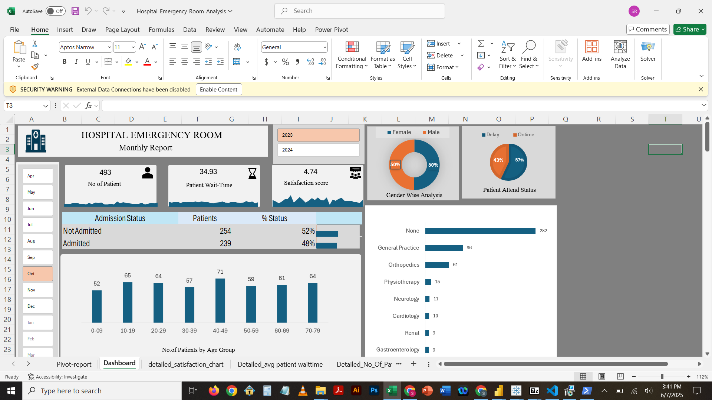

I’m a data professional passionate about building intuitive dashboards and scalable data pipelines. With experience in Power BI, Excel, Azure Data Factory, and Databricks, I turn raw data into impactful stories and solutions.
Master’s in Data Science at University of Maryland, Baltimore County (UMBC).
WikiCharities – Data Analyst (Jun 2025 – Present)
Collected and cleaned nonprofit organization data using SQL, Python, and Excel. Automated data workflows and supported research efforts by delivering curated datasets for internal use and platform engagement.
Amazon – Relay Operation Analyst (Oct 2022 – Jul 2023)
• Queried SQL-based systems (QueryExpress) to extract, join, and analyze 50K–100K daily operational records, enabling data-driven decisions for relay operations.
• Cleaned, validated, and transformed datasets in Excel using advanced formulas, conditional logic, and PivotTables, reducing manual effort by 40% and improving data accuracy.
• Built and maintained interactive QuickSight dashboards to monitor SLA compliance, identify delays, and track route performance, providing real-time operational insights to management.
• Automated recurring reports and implemented data quality checks to detect bottlenecks early, improving trailer departure KPIs by 15% and enhancing on-time delivery rates.
Cognizant – Programmer Analyst Intern (Jan 2021 – Apr 2022)
• Designed, developed, and maintained end-to-end ETL pipelines using Informatica PowerCenter to integrate data from multiple sources, improving data availability by 30% for downstream reporting and analytics.
• Optimized ETL workflows through parameterization, reusable mappings, and efficient transformation logic, reducing load times by 27% and improving overall system performance.
• Created and executed comprehensive ETL testing strategies, including unit, integration, and regression testing, to cut runtime errors by 20% and improve QA handover efficiency by 15%.
• Developed PySpark scripts in Azure Databricks for large-scale data processing, data modeling, and performance testing, enabling faster insights and reliable analytical datasets.
Tools: Excel, Power Query, Power Pivot
Interactive Excel dashboard showing ER patient trends, wait times, demographics, and admission rates with slicers and KPIs.
Tools: Power BI, Power Query, DAX
Dynamic dashboard analyzing booking patterns, average fares, and trip distances using heatmaps and time-based breakdowns.
Tools: Tableau, Excel
Tableau dashboard analyzing lending patterns, credit risk, and borrower behavior with segment filters and visual trends.
Tools: Azure Data Factory, Data Lake, Databricks, PySpark, Delta Lake
Designed an end-to-end Azure data pipeline following the Medallion Architecture. Ingested data from REST APIs into the bronze layer, processed it in Databricks (silver layer), and stored optimized data in Delta Lake (gold layer) for reporting.
Email: sujeethreddysithagari@gmail.com
LinkedIn: linkedin.com/in/sujeeth-sithagari